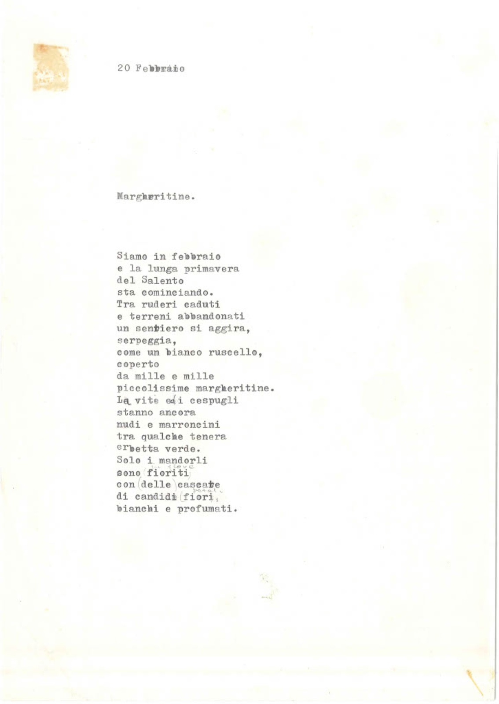
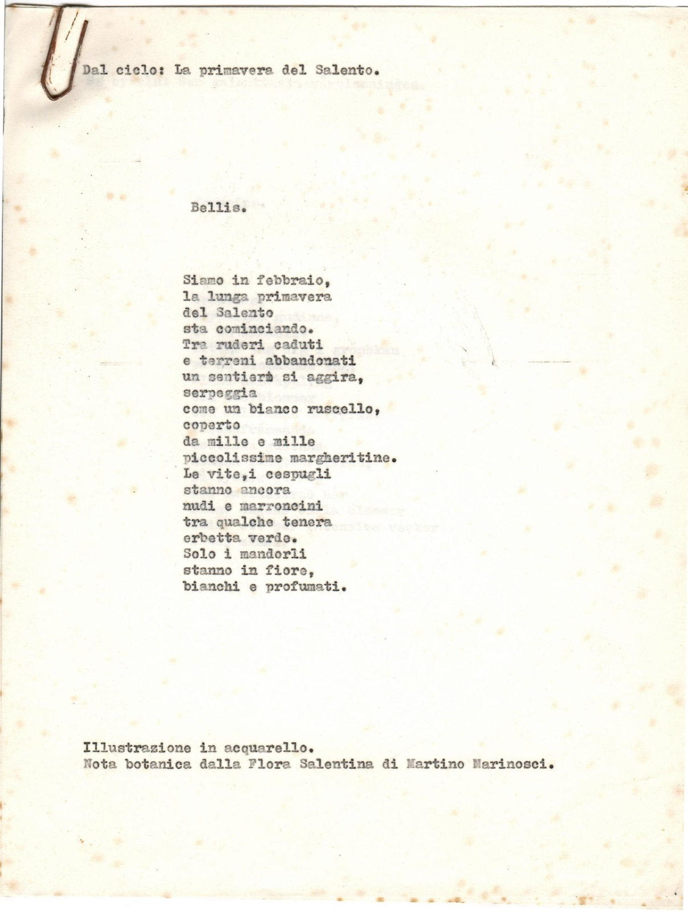
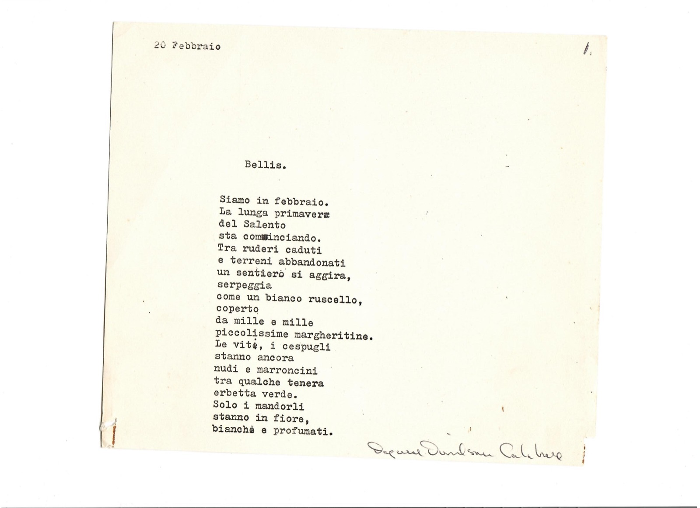

Bellis
- Categoria
- Poesia
- Fogli
- 3
- Tag
- Primavera del Salento Pianta - Bellis Perennis
Foglio 1 di 3

[bozza] 20 Febbraio Margheritine. Siamo in febbraio e la lunga primavera del Salento sta cominciando. Tra ruderi caduti e terreni abbandonati un sentiero si aggira, serpeggia, come un bianco ruscello, coperto da mille e mille piccolissime margheritine. Le vite e i cespugli [?] stanno ancora nudi e marroncini tra qualche tenera erbetta verde. Solo i mandorli sono [cancellato: fioriti] [aggiunto: in fiore] con [cancellato: delle] cascate di candidi [cancellato: fiori] [aggiunto: petali], bianchi e profumati. [in alto a sinistra: una macchia di colore]
Foglio 2 di 3

[versione per la stampa] Dal ciclo: La primavera del Salento. Bellis. Siamo in febbraio, la lunga primavera del Salento sta cominciando. Tra ruderi caduti e terreni abbandonati un sentiero si aggira, serpeggia come un bianco ruscello, coperto da mille e mille piccolissime margheritine. Le vite, i cespugli stanno ancora nudi e marroncini tra qualche tenera erbetta verde. Solo i mandorli stanno in fiore, bianchi e profumati. Illustrazione in acquarello. Nota botanica dalla Flora Salentina di Martino Marinosci. [in trasparenza si legge un testo in svedese, dal foglio sottostante]
Foglio 3 di 3

[versione firmata] 20 Febbraio [a margine: 1.] Bellis. Siamo in febbraio. La lunga primavera del Salento sta cominciando. Tra ruderi caduti e terreni abbandonati un sentiero si aggira, serpeggia come un bianco ruscello, coperto da mille e mille piccolissime margheritine. Le vite, i cespugli stanno ancora nudi e marroncini tra qualche tenera erbetta verde. Solo i mandorli stanno in fiore, bianchi e profumati. Firma: Dagmar Davidson Calabrese
Documentazione digitale
Documentazione e codifica dell'ITEM: